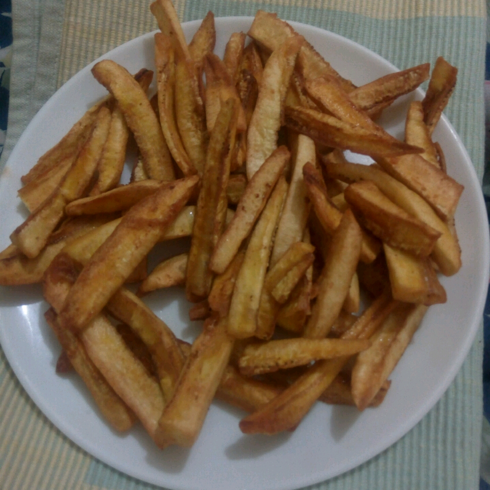

Green Banana Fries

Green Banana Fries
Ingredients:
- 5 small unripe (green) bananas
- 1 quart oil for frying, or as needed/li>
- salt to taste
Steps:
- Peel the bananas using a knife, as they are not ripe and will not peel like a yellow banana. Slice into long thin wedges or strings to make fries.
- Heat the oil in a heavy deep skillet over medium-high heat. If you have a deep-fryer, heat the oil to 375 degrees F (190 degrees C). Place the banana fries into the hot oil, and fry until golden brown, 5 to 7 minutes. Remove from the oil, and drain on paper towels. Pat off the excess oil, and season with salt. Serve immediately.